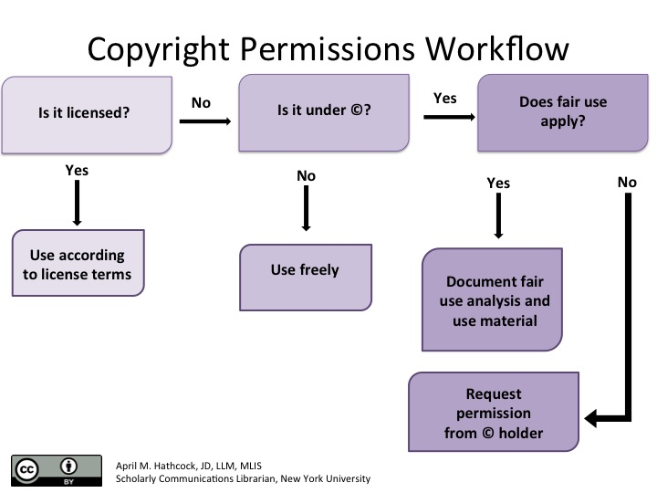
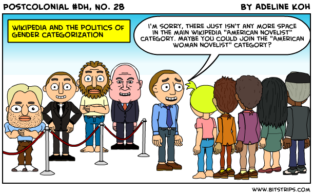

Data, Part 2
Contents
Data, Part 2#
Use and Re-use of Data#
Digital projects and research#
We have been discussing different aspects and stages of digital scholarship projects.When you are looking to start a digital research project, you will need access to data. That access can be complicated by a number of issues including: legal, technical, logistical, ethical, etc.
In this session we will be discussing those issues that can effect access such as:
In accessing or creating data sets, there can be legal (copyright, licensing), technical/logistical (institutional) or ethical issues.
We will be discussing:
Copyright and licensing as it relates to accessing already existing datasets
The related topics of ethics, consent and power in the creation or repurposing of already existing data sets.
Legal#
Copyright#
Copy rights are a collection of rights, and they vary from country to country. The collections of rights are typically as follows:
Economic
Reproductions of the work in various forms, such as printed publications or sound recordings;
Distribution of copies of the work;
Public performances of the work;
Broadcasting or other communications of the work to the public;
Translations of the work into other languages; and
Adaptations of the work, such as turning a novel into a screenplay.
Moral
The right to claim authorship of a work (sometimes called the right of paternity or the right of attribution); and
The right to object to any distortion or modification of a work, or other derogatory action in relation to a work, which would be prejudicial to the author’s honor or reputation (sometimes called the right of integrity).
Cultural heritage institutions like archives and museums can require that you ask them for permission to re-use or re-publish copyrighted works in their collections, but if they create a scanned reproduction of something that is in the public domain, that scan won’t be copyrightable.
What copyright claims are on SMU Digital Collections?
What is stated at the collection level?
What is stated at an item level?
Licensing#
If you’re using digital resources that were acquired or made available under a license, then your use is governed by the license and not by copyright.
For example, SMU patrons students using ARTstor are governed by the license that SMU Libraries signed in order to make ARTstor images available to the SMU community.
See examples of usage restrictions in the licenses of ARTstor.
What is fair use?#
Measuring fair use: The four factors#
The purpose and character of your use.
The nature of the copyrighted work.
The amount and substantiality of the portion taken, and.
The effect of the use upon the potential market.
Copyright permissions workflow#
Licensing, copyright, and fair use all together in a workflow diagram for determining when to seek permission to use a copyrighted work.

[]
Creative Commons#
Additional readings#
NEH Legal Literacies for Text Data Mining (LLTDM)
Institutional Access#
Accessing datasets from subscription library databases is governed by contract agreements that may require permissions or prohibit downlands without an additional fee.
Some databases are explicit about how to you can request datasets as datasets, while some are not.
If you have any questions about any other dataset, please contact your librarian.
Examples of data sets#
Here is a guide that lists databases that have datasets.Data sources: Overview guide
JSTOR
HathiTrust
Corpus of Contemporary American English (COCA)
Library of Congress
Activity#
Choose one of the databases form above and answer the following questions.
What data can you access? What datasets can you access?
Is it meant to be human readable (individual downloads only) or are you allowed to do bulk downloads?
Is the date already assembled into datasets?
What restrictions or permissions are already in place?
What are you allowed to do with those datasets?
Ethics#
The approach of this discussion is premised on the understanding that there is no simple roadmap for practicing ‘good ethics’ and, indeed, what constitutes ‘good’ or ‘ethical’ for one individual may vary from the next and is often reflective of a scholar’s political commitments and personal background. Nonetheless, we will foreground key ethical questions to ask (and keep asking!) when designing and doing digital projects or digital research, and key concepts to draw upon when thinking through these questions.
We will discuss:
Specific ethical questions and levels of impact to consider when doing various forms of digital research and using digital tools.
What are ethics?#
For the purposes of this session, we define ethics as the moral principles that an individual aims to follow in practice to the best of their ability, research, and foresight.
Ethics are not just a list of universal standards that can be found in a research methods textbook, or the entirety of the Institutional Review Board’s protocols, or that which is legal under the current political regime where one is located. Ethics are about being caring and sensitive towards the ways in which what an individual does and does not do affects other people, foremost, and perhaps also ecosystems, and trying one’s best to not only not cause harm to them but ideally also actively do good (or even take an activist approach!).
Practicing good ethics is in part acting on one’s moral instincts, but it is also about stopping to question those instincts, to research histories and effects, and to empathize and communicate with individuals and communities.
What do we mean by digital projects and research?#
Projects or research that engage with the digital — i.e., that examine, use, or create digital tools or platforms.
Situated ethics#
Situated ethics refers to the notion that a person’s understandings of and commitments to ethics or morality are greatly linked to their own experiences, positionalities, and political orientations, as well as the particular context in which that person is putting such ethics into practice (see Helen Simons and Robin Usher, Situated Ethics in Educational Research, 2000). “Situated ethics” draws on Donna Haraway’s concept of Situated Knowledges (1988), which argues that all ideas, whether in science, the humanities, or personal convictions, are created from and are inherently representative of the conceptualizer’s particular situated standpoint.
“I would like to insist on the embodied nature of all vision, and so reclaim the sensory system that has been used to signify a leap out of the marked body and into a conquering gaze from nowhere. This is the gaze that mythically inscribes all the marked bodies, that makes the unmarked category claim the power to see and not be seen, to represent while escaping representation. This gaze signifies the unmarked positions of Man and White, one of the many nasty tones of the word objectivity to feminist ears in scientific and technological, late industrial, militarized, racist and male dominant societies, that is, here, in the belly of the monster, in the United States in the late 1980s. I would like a doctrine of embodied objectivity that accommodates paradoxical and critical feminist science projects: feminist objectivity means quite simply situated knowledges.” (Donna Haraway, Situated Knowledges, 1988, page 581)
Situated ethics thus argues that ethical concerns will vary amongst people, disciplines, projects, tools, and contexts depending on the particular situated perspective of that person, group, or project.
Thinking through how ethical ideas and practices, or lack thereof, are situated may prompt questions such as: How were computers developed? By whom? Where? Why? As Meredith Broussard argues in Artificial Unintelligence (2018), a “particular strain of white, male bias,” to which I’d add United States and Euro-centric, runs deep in tech (page 79).
More on Feminist Social Epistemology, Stanford Encyclopedia of Philosophy
Ethics from the standpoint of the institution#
We are scholars, so first things first: Understand any institutional compliance requirements you may need to fulfill to be permitted to do your project or research. Note that this section is primarily focused on institutional compliance in the United States, and it emphasizes the perspective of social science researchers, who most frequently contend with Institutional Review Boards (IRBs). While humanities researchers often do not have to engage with IRB when working within their discipline, these considerations may also become relevant when creating certain kinds of digital projects.
Thinking in terms of “levels of impact”#
An “impact approach” foregrounds:
“… the possible or probable impact, rather than the prevention of impact in the first place. It acknowledges that we change the world as we conduct even the smallest of scientific studies, and therefore, we must take some personal responsibility for our methods.” A. Markham
Let’s focus on these levels of impact:
Direct impacts on people through data collection;
Ramifications of (re)producing categories: i.e. the politics of knowledge production and categorization;
social, political, and economic impacts of projects or research. Critically consider questions of: accessibility and openness, for people of varying (dis)abilities, and depending on people’s language fluencies, access to technology and speedy internet, and geo-political location in the world.
More case studies:
Citations for this now pulled dataset “80 Million Tiny Images” in Google Scholar.
Even though this data set was ‘pulled,’ look how recently it has been cited.
We also touched on this during our data session
Reflection prompt#
Think about the digital project or research you are or will be working on. If you had to describe your project to someone unfamiliar with your research, could you do the following:
In 1 minute each, what is the purpose of your project—what does it aim to do?
In 1 minute each, what is the design of your project—how will you do this?
In relation your projects’ purpose and design, what might be some ethical concerns that fall beyond questions of legality or the purview of the IRB?
Level of Impact I: Direct impacts on people through data collection#
Data is people!#
Direct effects on people#
“At the most basic level of an impact approach, we might ask how our methods of data collection impact humans, directly. If one is interviewing, or the data is visibly connected to a person, this is easy to see. But a distance principle might help us recognize that when the data is very distant from where it originated, it can seem disconnected from persons, or what some regulators call ‘human subjects.’” (Annette Markham, “OKCupid data release fiasco: It’s time to rethink ethics education,” 2016, emphasis added)
Context for “okcupid data release”: “A group of researchers has released a data set on nearly 70,000 users of the online dating site OkCupid. The data dump breaks the cardinal rule of social science research ethics: It took identifiable personal data without permission. The information — while publicly available to OkCupid users — was collected by Danish researchers who never contacted OkCupid or its clientele about using it.
The data, collected from November 2014 to March 2015, includes user names, ages, gender, religion, and personality traits, as well as answers to the personal questions the site asks to help match potential mates. The users hail from a few dozen countries around the world.” Researchers just released profile data on 70,000 OkCupid users without permission
What counts as “human”? What data should be off limits?#
Some commonly blurred definitions, according to the 2012 Ethical Decision-Making and Internet Research report by the the AoIR Ethics Working Committee:
“Human subjects”:
“The definition of ‘human subject’ has become, unfortunately, a litmus test for whether or not one needs to undergo ethical review before conducting research… ‘human subject’ has never been a good fit for describing many internet-based research environments… when considered outside a regulatory framework, the concept of ‘human subject’ may not be as relevant as other terms such as harm, vulnerability, personally identifiable information, and so forth.”
Public vs. private:
“Individual and cultural definitions and expectations of privacy are ambiguous, contested, and changing. People may operate in public spaces but maintain strong perceptions or expectations of privacy. Or, they may acknowledge that the substance of their communication is public, but that the specific context in which it appears implies restrictions on how that information is — or ought to be — used by other parties. Data aggregators or search tools make information accessible to a wider public than what might have been originally intended.”
Data (text) vs. persons:
“Is an avatar a person? Is one’s digital information an extension of the self? … Can we assume a person is wholly removed from large data pools? … there is considerable evidence that even ‘anonymised’ datasets that contain enough personal information can result in individuals being identifiable … Does the connection between one’s online data and his or her physical person enable psychological, economic, or physical, harm? One way of evaluating the extent to which these ethical dilemmas may be hidden is to focus on the way that procedures for data collection or analysis extract data from lived experience.”
Source: Ethical Decision-Making and Internet Research, Ver. 2, emphases added
Human subjects & the “distance principle”#
A working definition of the “distance principle”:
“the extent to which Internet texts or data sets might connect to persons [even when] the conceptual or experiential distance between the researcher and author/participant [does not appear to be] close” (Annette Markam & Elizabeth Buchanon, “Ethical Concerns in Internet Research”, page 10, emphasis added)
Data#
What are the differences between de-identified data, anonymized data, and re-identified data?
Researchers spotlight the lie of ‘anonymous’ data
What does access to metadata allow you to do? … These are the actual locations for millions of Americans.
“Law enforcement can and does purchase location data from data brokers, for instance. And while location data companies claim that their data has been de-identified, experts say it’s often possible to re-identify individuals….And it’s not just location data. Facial recognition company Clearview AI’s entire business model is to sell law enforcement agencies access to its facial recognition database, much of which was culled from publicly available photos Clearview scraped from the internet.” Here’s how police can get your data — even if you aren’t suspected of a crime
“Public” data#
Some questions to consider:
“In an age of digital media, do we really have any privacy?” (Susan Barnes, “A Privacy Paradox,” 2006)
How do we delineate between “research” vs. “spying”? Does this change when the project focuses on “big data”? (see Berendt, Büchler, & Rockwell, “Is it Research or is it Spying? Thinking-Through Ethics in Big Data AI and Other Knowledge Sciences,” 2015)
What forms of “public” data are ethical to use? Or require attribution?
How might we (intentionally or inadvertently) share data?
Example of researches not complying with IRB: A Duke study recorded thousands of students’ faces. Now they’re being used all over the world.
For those doing work with big data, recommended reading: Matthew Zook et al., “Ten simple rules for responsible big data research,” 2017
The question of personhood#
Consider the following questions:
“Is an avatar a person?”
“Is one’s digital information [e.g., photos, videos, audio, social media posts] an extension of the self?”
“Can we assume a person is wholly removed from large data pools?” Note:”there is considerable evidence that even ‘anonymised’ datasets that contain enough personal information can result in individuals being identifiable”
“Does the connection between one’s online data and their physical person enable psychological, economic, or physical harm?” Source: Ethical Decision-Making and Internet Research, Ver. 2.0
Additional AoIR Ethics Working Committee Guidelines and Reports
A case study#
Review Joshua Tabak and Vivian Zayas’s academic article and their summary of it for the New York Times, and discuss:
What kinds of “human subjects” are involved in this study?
Is a social media photo of oneself an extension of the self?
Does their methodology raise any ethical concerns?
Further reading: Patrick Sweeney, “Images of Faces Gleaned from Social Media in Social Psychological Research on Sexual Orientation,” 2017
Level of Impact II: Politics of knowledge production and categorization#
Politics of knowledge production#
“At another level, we can ask how our methods of organizing data, analytical interpretations, or findings as shared datasets are being used — or might be used — to build definitional categories or to profile particular groups in ways that could impact livelihoods or lives. Are we contributing positive or negative categorizations?” (Annette Markham, “OKCupid data release fiasco: It’s time to rethink ethics education,” 2016, emphasis added)

Image source: Created by author in MS Word.
Reflection prompt#
How are knowledge and power mutually constituted, according to the theorizations of Gramsci, Hall, Foucault, or others, perhaps from your own discipline?
How might we apply the concepts below when thinking through ethics for digital research and projects?
Some key concepts:
Hegemony (Antonio Gramsci)
“The ability of a dominant group to create [majority] consent and agreement [around a particular system of meanings] within a population without the use or threat of force” (Kenneth Guest, Cultural Anthropology: A Toolkit for a Global Age, 2014, page 52)
Discourse (Michel Foucault)
Discourses are competing ideologies (or individualized groups of statements), constructed by people and institutions in power over time, that become dominant amongst societies of people. Discourses produce knowledge in mediums that a society perceives as normative and generally does not question; in doing so, discourses pervasively shape how the people in that society think, act, and react (see Michel Foucault, The Archaeology of Knowledge and the Discourse on Language, 1969).
“Policing the crisis” (Stuart Hall)
“Policing the crisis” refers to the unnatural process by which certain actions (by certain people) become and continue to be understood, reported, policed, and sanctioned as a type of “crime.” The police, the judicial system, and mainstream media “are actively and continuously part of [this] whole process” (Stuart Hall et al., Policing the Crisis, 2013 [1978], page 54). Hall et al. focus on the emergence of “mugging” and its attendant social panic in Britain, beginning in the early 1970s.
For further readings, see the section “Key works (among many more!) on the politics of knowledge production and forms of knowledge” on the Continue page at the end of this workshop.
An example:#
The hegemonic racial discourses that associate Blackness with criminality in the United States serve to justify police brutality towards and higher rates of criminalization and mass incarceration of Black people — and these higher rates of policing and incarcerating serve to justify the assumption of their criminality.
So then when, for example, someone attempts to make an algorithm to identify potential criminals that is produced through machine learning on “crime” data (e.g. the number of arrests or convictions in relation to demographic data) that algorithm will reproduce the racist ideologies and practices that lead to the policing and incarcerating of Black people at a much higher rate.
Further reading: Julia Angwen and Jeff Larson, “Bias in Criminal Risk Scores Is Mathematically Inevitable, Researchers Say,” 2016
The ramifications of (re)producing categories#
Decisions on the categories and boundaries scholars use shape our:
Datasets
Catalogues
Maps
Algorithms
Categories are key to digital tools in many ways: the classification systems used by libraries and archives, the tags used on websites, the methods of categorization informing algorithms, and the spatial divisions on a map. The production and reproduction of these categories shapes how things/people/places, etc., are identified and grouped together, and also what is searchable, findable, and foregrounded.

Image source: A comic by Adeline Koh from #DHPoco: Postcolonial Digital Humanities, shared here with her permission.
Bias in, bias out: Systems of oppression and inputting human bias#
Human beings are making decisions that inform how these groupings are being made, and human “beliefs are embedded in the design and concept of technological systems” (Broussard, 2018, page 67). Technology is not unbiased, but rather will inevitably represent the decisions of its human creators who each create from their own situated standpoints — personally, socially, and historically.
The United States, for example, is a society shaped by dominant systems of oppression such as white supremacy, settler colonialism, and cis-hetero-patriarchy (see the Glossary for definitions). These oppressive systems affect — sometimes intentionally, sometimes not — the decisions people make when they create digital platforms or tools (or anything for that matter!) and the parameters of what is permitted/supported/funded to be created and shared, and thus also shape the output that results from these digital platforms or tools or their computations.
“Writing a presentation on library cataloging and classification & realizing that there is nothing serendipitous about serendipitous browsing. As with everything else, someone decided where the book you found on the shelf would land. Someone with biases because we all have them,” (Jenna Freedman @zinelib on Twitter, shared here with her permission. Also see: Jenna Freedman, “Library Cataloging and Classification: Reifying the Default,” 2018)
“Human beings are developing the digital platforms we use, and as I present evidence of the recklessness and lack of regard that is often shown to women and people of color in some of the output of these systems, it will become increasingly difficult for technology companies to separate their systematic and inequitable employment practices, and the far-right ideological bents of some of their employees, from the products they make for the public.” (Safiya Umoja Noble, Algorithms of Oppression: How Search Engines Reinforce Racism, 2018, page 2; see also Meredith Broussard, Artificial Unintelligence: How Computers Misunderstand the World, chapter six, 2018)
In the fields of Artificial Intelligence (AI) and Data Science, the phrase “junk in, junk out” (Eric David Halsey, 2017), is used to describe the the fact that predictive models take into account the data that is provided to them by their human creators, and then extrapolate to possible futures. Often this data is incomplete, faulty, or messy in a way in which the results are considered “junk,” because the data input to the model was “junk.”
While decisions made by algorithms are often presented as free of the personal value judgments that a loan officer or judge might apply to loan candidates or in determining the length of a prisoner’s sentence, for example, they can still reproduce the bias evident in the data the algorithm is trained on. Many scholars and activists have also critiqued the use of existing data on policing, arrests, and recidivism in algorithms that try to predict future criminal behavior. Because the data being input to the model is based on past policing practices that include the over-policing of communities of color and low-income people, that data is biased against those groups and thus will reproduce the existing bias in its predictions of future activities. For a deeper dive, you can read more in this article (Maurice Chammah, 2016) that shows how predictive policing is not value-free and unbiased.

Image source: Created by Kelsey Chatlosh in MS PowerPoint.

“Civil rights experts say Williams is the first documented example in the U.S. of someone being wrongfully arrested based on a false hit produced by facial recognition technology. What makes Williams’ case extraordinary is that police admitted that facial recognition technology, conducted by Michigan State Police in a crime lab at the request of the Detroit Police Department, prompted the arrest, according to charging documents reviewed by NPR. The pursuit of Williams as a possible suspect came despite repeated claims by him and his lawyers that the match generated by artificial intelligence was faulty.” -The Computer Got It Wrong’: How Facial Recognition Led To False Arrest Of Black Man

“A Black woman at my university once told me that whenever she used Proctorio’s test proctoring software, it always prompted her to shine more light on her face. The software couldn’t validate her identity and she was denied access to tests so often that she had to go to her professor to make other arrangements. Her white peers never had this problem.”Software that monitors students during tests perpetuates inequality and violates their privacy
Attempts to “resist the hierarchy”#
A question to consider:
Can categorical hierarchies and existing bias be resisted through digital projects? If such resistance is possible, how can it be achieved?
As scholars, we have a responsibility to think critically about how we do or do not reproduce existing biases in the canons we reference, the data we use, and the conclusions we reach. Some projects that have tried to produce new, less-biased representations include:
A case study.#
Check out the Interference Archive (IA) website, read this brief article and discuss:
What kinds of materials does IA host and do they have rights to it?
In reference to the article, how does IA see itself as “resisting the hierarchy”?
What levels of impact does IA aim to take into account?
Level of Impact III: Social, political, and economic impacts of projects or research#
Reflection prompt#
Think about the digital project or research you are or will be working on. If you had to describe your project to someone unfamiliar with your research, could you discuss the following questions:
Whose labor and what materials do you rely upon to do your work?
Could your research or project be used to justify or facilitate potentially harmful control or surveillance – by, e.g., the state, a vigilante group, an abusive partner?
How could your work cause changes to or justify social, economic or political discourses?
Will your work be used for profit? For whom?
Closed systems and Black Boxes#
When corporations, journalists, governmental entities, NGOs, non-profits, researchers keep their data sets and processes hidden, what issues can this raise around ethics and access?
If they don’t keep their data sets hidden, can that also raise ethical issues?
How important is it to consult with disciplinary experts? Community members?
How does what your community incentivize encourage certain behaviors?
We discussed some of this in our Intro session.
“This past April, Tech Insider talked to experts in the fields of clinical pathology and laboratory medicine, microfluidics, and biomedical engineering to try to piece together an answer [on how the Theranos Edision machine was supposed to work]. No one could figure it out conclusively, because as Dr. David Koch, president of the American Association for Clinical Chemistry and a professor at Emory University, said then, “It may be wonderful [or] it may bomb, but I really can’t be more definitive because there’s nothing to really look at, to read, to react to.”What we know about how Theranos’ ‘revolutionary’ technology works & What Exactly Was The Theranos Edison Machine Supposed To Do?
“Broken world thinking shifts us from the question, “How did they make that?” to the more subtle question, “How do they keep it running?” Extending this broken world thinking to the realm of the digital humanities forces us to reckon with black boxes before they become the wreckage of the past… But what if we took black boxes not as the endpoint of history, but as an inception point? What if the digital humanities understood black boxes — both literal and metaphorical black boxes — as a site for future-looking inquiries instead of a way to reconstruct the past?” The Black Box and Speculative Care
“…a provocation to reflect upon research approaches and methods themselves whose normative ontologies may (re)produce dynamics of power, inequity, and othering. Many taken-for-granted methodologies have their origins in, for example, colonial attitudes and practices. Digital tools and approaches (indeed professional paradigms) are more often extractive or, by their codifying nature, limit ‘authorised’ types of knowledge and interpretation. Might we reconfigure such methods for transformative ends or seek alternatives?… oral history (at its core in the feminist and social justice tradition) as an example of method that traverses both feminist DH and CHS and with which, we suggest, it is conceptually allied. ” Opening the ‘black box’ of digital cultural heritage processes: feminist digital humanities and critical heritage studies
Unintended consequences#
“Ethics is literally about the world of unintended consequences.” How Twitter hired tech’s biggest critics to build ethical AI
Red teams#
“Rumman also recommends several organizational mechanisms to support better governance approaches to AI ethics: most importantly, being aware of who has the power to make & influence decisions over digital projects. Interdisciplinary approaches are critical to success, but often difficult to enact in practice. She points to the emergent mechanisms within cybersecurity as a particular success: using ‘red teams’ with many different specialisms to identify and address problems. Second, having a process for critical conversations to take place is key. This can be in the format of an ombudsman office whose function is to independently represent the interests of various stakeholders, a review board, or an open-door/town hall policy. But Rumman says for real change to work, a no-blame culture is essential: consider medical ethics review boards, or flight safety, where the focus is on limiting future damage through open and transparent conversations about what went wrong, rather than on identifying & punishing bad actors.” - Critical Literacy for AI Governance Modeling: Growing Digital Ethics in Practice
Retraction#
“When the paper’s authors finally called for its retraction, they admitted that their study couldn’t make any claims about race and fatal shootings at the hands of police. “The mistake we made was drawing inferences about the broader population of civilians who interact with police rather than restricting our conclusions to the population of civilians who were fatally shot by the police,” they wrote.” - Tech Firms Hire ‘Red Teams.’ Scientists Should, Too
Range of impact: Accessibility in your work#
What is universal design? What is accessibility?#
“‘Universal design’ is the process of creating products that are usable by people with the widest possible range of abilities, operating within the widest possible range of situations; whereas ‘accessibility’ primarily refers to design for people with disabilities. While the focus of accessibility is disabilities, research and development in accessibility brings benefits to everyone, particularly users with situational limitations, including device limitations and environmental limitations.” (Shawn Lawton Henry, et al., “The role of accessibility in a universal web,” 2014)
In this section, we will continue to use the term “accessibility,” rather than universal design, given that it is quite difficult to make anything truly universally accessible across differences of, for example, institutional access, location, wealth, nationality, language abilities, mental and physical abilities, etc.
(Although, we do appreciate the aims of a universal design approach, and especially its goal to design products that are usable across the widest possible range of people and contexts.)
Approaching accessibility#
What forms of accessibility are particularly relevant to consider when designing, doing, and sharing digital research and projects?
Accessibility to people with disabilities#
Questions to consider:
Is your project accessible to people with visual, hearing, or other physical impairments?
If your project exists in a physical space, is that space accessible to people with various disabilities?
Is your project accessible in a variety of formats — e.g., are all images or audio clips paired with a text description? If your project is online, does that site function with a screen reader?
Sources to check out:
George Williams, “Disability, Universal Design, and the Digital Humanities,” 2012.
Dr. Joshua Miele’s work on digital accessibility — see a review of his GC talk by Nanyamkah Mars here
Tyler Zoanni, “Creating an Accessible Online Presentation,” 2017.
International accessibility and language access#
Reflection prompt: Questions to consider:
Is your project accessible from outside of the country where you made it?
Are there particular language-speaking audiences that may find your project useful or pertinent? Is your project accessible in the language(s) that they speak?
If yes, did a person create the translations or an automated service? Do you have a method for quality control?
Sources to check out:
Openness and accessibility#
Questions to consider:
Is your project behind a paywall? Or only accessible through propriety software or specific expensive hardware (e.g., Mac computers)?
If your project exists online, does it require large bandwidth to open?
Is your project open access? Open source?
Is your project licensed for sharing through Creative Commons?
Would you consider creating an Open Educational Resource (OER)?
Would you consider making any data related to your project publicly accessible? (And would this raise any anonymity, confidentiality or other ethical concerns?)
A note on “free software” and user control from Richard Stallman:
“According to Stallman, for software to qualify as free it must provide what he describes as ‘four essential freedoms’. ‘Freedom zero is to run the program however you wish, for whatever purpose you have. Freedom one is the freedom to study and change the source code’ … These two freedoms allows users to individually control their own copies of software, and tailor it to their needs, however … ‘Collective control is the way that non-programmers can participate deciding what the program can do,’ he explains. ‘It requires two more freedoms: freedom two is to make exact unmodified copies and give or sell them to others when you wish. And freedom three is to make copies of your modified versions and give or sell them to others when you wish. So when the program carries these four freedoms, the users control it, it respects their freedom, that’s free software. But if one of these freedoms is missing or incomplete, then the program controls the users and the proprietor controls the program’” (Factor, interview with Richard Stallman, “The Vanishing State of Privacy,” 2017)
Sources to check out:
What or when not to make things accessible#
Thinking of accessibility here in terms of making tools, projects, writing, or data readily available for re-use without having to first directly request permission, when might researchers or makers not want to make their work or data fully open and accessible?
“I have increasingly come to wonder if “permission-less-ness” as many in “open” movements have theorized this, is built on some unexamined exploitation and extraction of labor – on invisible work, on unvalued work. Whose digital utopia does “openness” represent?” (Audrey Watters, “Invisible Labor and Digital Utopias,” 2018)
“Guard against the re-identification of your data. Practice ethical data sharing.” (Matthew Zook et al, “Ten simple rules for responsible big data research,” 2017 (rules 3 and 4))
When might researchers or makers decide not to even record data or media, or to delete?
“Just because we can record everything doesn’t mean that we as scholars must or should record everything… At some level, all forms of recording (writing, audio, video, photo) must be evaluated for how they distribute burdens of risk and objectification.” (Roshanak Kheshti, interviewed by Kelsey Chatlosh, “Interview: Sound recording, oral positionality, and audio as ethnographic object,” 2018)
“As we celebrate enhancements to the discovery of and access to our online oral history collections, we need to carefully reflect on and consider the consequences of providing immediate and widespread access to oral history interviews… No matter what the topic, oral history interviews can contain a massive amount of personal information posing a wide range of potential risks to the narrator, but also to the archive.” (Doug Boyd, “Informed Accessioning: Questions to Ask After the Interview,” 2015)
Reflection prompt#
Think about the digital project or research you are or will be working on. If you had to describe your project to someone unfamiliar with your research, could you discuss the following questions:
Who will be able to access your research or project?
Where and through what media will it be accessible?
Will it cost money to access?
Will it be accessible in different languages?
Will it be accessible to people with visual, hearing, mobility, or other physical, sensory, or cognitive disabilities?
Summary: What to do before this synchronous session#
Read one of the following posts before this session.
Read one of the following instances of how the use of computational technology, machine learning, or AI has led to some unintended consequences:
Respond to the following in the thread in Slack:
What is the responsibility of developers, researchers, or those implementing these technologies?
Was this outcome just an inevitability of the technology being applied to this data?
How does might this apply to your use of technology for scholarship, research, or teaching?
Attribution#
Session Leaders: Rafia Mirza & Jonathan McMichael
Written by Rafia Mirza.
Session partially adapted from:
Recap of our Workshop on Copyright in Digital Humanities, used under a Creative Commons Attribution 4.0 Unported License (CC BY 4.0).

Digital Research Institute (DRI) Curriculum by Graduate Center Digital Initiatives is licensed under a Creative Commons Attribution-ShareAlike 4.0 International License. Based on a work at Curriculum for the GC DHRI. When sharing this material or derivative works, preserve this paragraph, changing only the title of the derivative work, or provide comparable attribution.
Social, political, and economic impacts#
Reflection prompt: Some questions to consider:
Whose labor and what materials are used to make the digital tools you use? How should we (those who benefit from the labor of other people) attribute others’ labor? How can we (users of these tools) be held accountable?
Could your research or project be used to justify or facilitate potentially harmful control or surveillance?
Could it influence social or political discourse? Modes of profit?
These are big questions.
A researcher should not be expected to have all the answers or predict the future. The aim here is to thoughtfully consider these questions, to think critically about potential positive and negative effects of research and projects, and to be responsible and accountable.
As Annette Markham reminds us, as discussed earlier in this session:
Image source: Sergiu Bacioiu from Romania, “Ripple effect on water,” Wikimedia, Creative Commons Attribution 2.0 Generic license
Further readings:
Xiang Biao, Global Body Shopping: An Indian Labor System in the Information Technology Industry, 2007.
Elsa Davidson, The Burdens of Aspiration: Schools, Youth, and Success in the Divided Social Worlds of Silicon Valley, 2011.
Anna Lauren Hoffmann, “Data Violence and How Bad Engineering Choices Can Damage Society,” 2018.
The Policing in Chicago Research Group, “Tracked and Targeted: Early Findings on Chicago’s Gang Database,” 2018.
Safiya Umoja Noble, Algorithms of Oppression: How Search Engines Reinforce Racism, 2018.
Cathy O’Neil, Methods of Math Destruction: How Big Data Increases Inequality and Threatens Democracy, 2016.
Matthew Zook et al, “Ten simple rules for responsible big data research,” 2017.